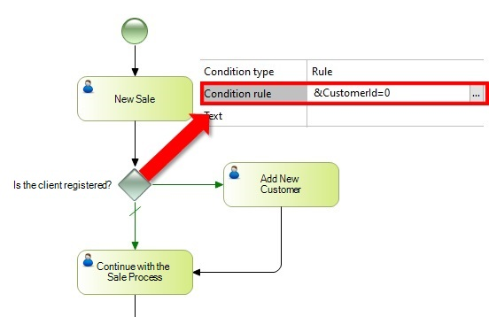

Objects: Business Process Diagram
This type of Gateway splits the flow into two or more paths. The sequence flow will only continue on one of them. The conditions are expressed as Gateway attributes and can be set as a formal expression.
The selection of a path is based on an assessment of the conditions imposed on each path. They are evaluated one by one in the order they were declared in the Gateway, and the path will be chosen for the first condition that evaluates to True. If neither condition is True, the process will be stalled in the Gateway; therefore, the use of a default path is suggested. Use an Inclusive Gateway if the process needs to activate more than one outgoing sequence flow.
Like the other Gateways, this allows you to control a process splitting or merging. During the split, the flow will continue on only one path that can be traced in the Gateway, and the election will evaluate the conditions that are defined for the Gateway (will have one for each way).
In a merge, multiple paths arrive at the Gateway. The flow will simply continue moving to the next Task. If another path arrives from another incoming Sequence Flow, then it will also pass straight through; there will be two instances of the following Task. If the desired behavior is that only the first one should pass through (ignoring the rest), then a Complex Gateway is needed.
In this example, the user must register a new sale. The function of the Exclusive Gateway is to determine the flow direction.
To do so, it is possible to add a Condition rule in one of the paths.
In this case, one path checks if the Relevant data &CustomerId is equal to 0; if so, the flow continues to the Add New Customer Activity. The other path is the default one.

Event Gateway
Inclusive Gateway
Parallel Gateway
| Backlinks | ||
| Category:BPD Gateways | Condition Procedure | |
| Event Gateway | Toc:GeneXus BPM Suite | Inclusive Gateway |
| Parallel Gateway |